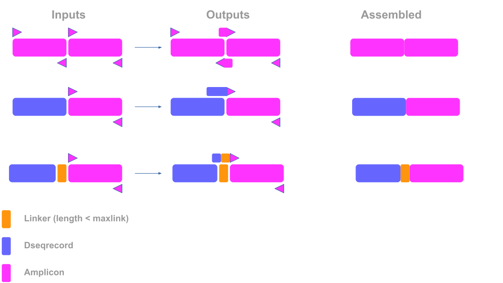
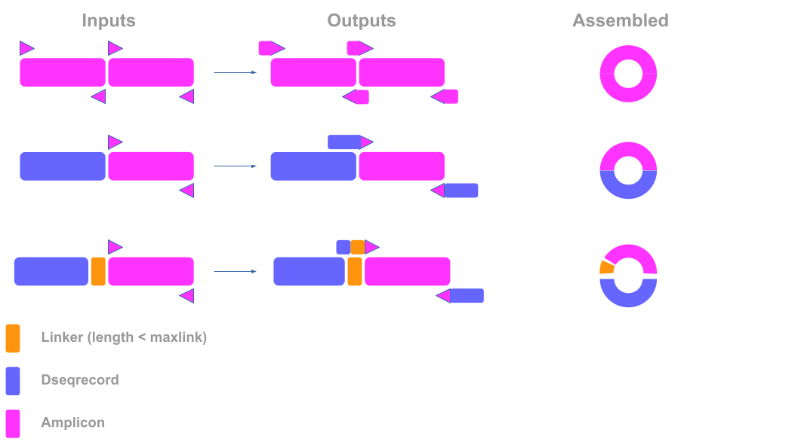

<!DOCTYPE html>
<html class="writer-html5" lang="en">
<head>
  <meta charset="utf-8" /><meta name="viewport" content="width=device-width, initial-scale=1" />

  <meta name="viewport" content="width=device-width, initial-scale=1.0" />
  <title>Primer design in pydna &mdash; pydna 6.0.0a24.post17+b7b559bd66 documentation</title>
      <link rel="stylesheet" type="text/css" href="../_static/pygments.css?v=80d5e7a1" />
      <link rel="stylesheet" type="text/css" href="../_static/css/theme.css?v=7ab3649f" />
      <link rel="stylesheet" type="text/css" href="../_static/custom.css?v=a051be83" />

  
    <link rel="shortcut icon" href="../_static/favicon.ico"/>
      <script src="../_static/jquery.js?v=5d32c60e"></script>
      <script src="../_static/_sphinx_javascript_frameworks_compat.js?v=2cd50e6c"></script>
      <script data-url_root="../" id="documentation_options" src="../_static/documentation_options.js?v=6efefdf6"></script>
      <script src="../_static/doctools.js?v=888ff710"></script>
      <script src="../_static/sphinx_highlight.js?v=4825356b"></script>
    <script src="../_static/js/theme.js"></script>
    <link rel="index" title="Index" href="../genindex.html" />
    <link rel="search" title="Search" href="../search.html" /> 
</head>

<body class="wy-body-for-nav"> 
  <div class="wy-grid-for-nav">
    <nav data-toggle="wy-nav-shift" class="wy-nav-side">
      <div class="wy-side-scroll">
        <div class="wy-side-nav-search" >

          
          
          <a href="../index.html" class="icon icon-home">
            pydna
          </a>
<div role="search">
  <form id="rtd-search-form" class="wy-form" action="../search.html" method="get">
    <input type="text" name="q" placeholder="Search docs" aria-label="Search docs" />
    <input type="hidden" name="check_keywords" value="yes" />
    <input type="hidden" name="area" value="default" />
  </form>
</div>
        </div><div class="wy-menu wy-menu-vertical" data-spy="affix" role="navigation" aria-label="Navigation menu">
              <p class="caption" role="heading"><span class="caption-text">Contents:</span></p>
<ul>
<li class="toctree-l1"><a class="reference internal" href="../index.html">Pydna</a></li>
<li class="toctree-l1"><a class="reference internal" href="../installation.html">Installation</a></li>
<li class="toctree-l1"><a class="reference internal" href="../modules/index.html">Modules</a></li>
<li class="toctree-l1"><a class="reference internal" href="../getting_started.html">Getting started</a></li>
<li class="toctree-l1"><a class="reference internal" href="../example_gallery.html">Example gallery</a></li>
</ul>

        </div>
      </div>
    </nav>

    <section data-toggle="wy-nav-shift" class="wy-nav-content-wrap"><nav class="wy-nav-top" aria-label="Mobile navigation menu" >
          <i data-toggle="wy-nav-top" class="fa fa-bars"></i>
          <a href="../index.html">pydna</a>
      </nav>

      <div class="wy-nav-content">
        <div class="rst-content">
          <div role="navigation" aria-label="Page navigation">
  <ul class="wy-breadcrumbs">
      <li><a href="../index.html" class="icon icon-home" aria-label="Home"></a></li>
      <li class="breadcrumb-item active">Primer design in pydna</li>
      <li class="wy-breadcrumbs-aside">
            <a href="../_sources/markdown_notebooks/primer_design.md.txt" rel="nofollow"> View page source</a>
      </li>
  </ul>
  <hr/>
</div>
          <div role="main" class="document" itemscope="itemscope" itemtype="http://schema.org/Article">
           <div itemprop="articleBody">
             
  <section id="primer-design-in-pydna">
<h1>Primer design in pydna<a class="headerlink" href="#primer-design-in-pydna" title="Permalink to this heading"></a></h1>
<p>You can use <code class="docutils literal notranslate"><span class="pre">pydna</span></code> for primer design in different contexts, let’s start with some basic primer functionalities.</p>
<section id="checking-the-tm-of-a-primer">
<h2>Checking the Tm of a primer<a class="headerlink" href="#checking-the-tm-of-a-primer" title="Permalink to this heading"></a></h2>
<p>Primer design in pydna is very flexible, and supports different methods. For typical use-cases, we recommend using <code class="docutils literal notranslate"><span class="pre">tm_default</span></code>, which uses the method <code class="docutils literal notranslate"><span class="pre">Bio.SeqUtils.MeltingTemp</span></code> from biopython, nearest neighbor thermodynamics values from <a class="reference external" href="https://pubmed.ncbi.nlm.nih.gov/15139820/">SantaLucia &amp; Hicks (2004)</a> and common values for nucleotide concentration, salt concentration, etc. You can of course change those settings. For a full dive check <code class="docutils literal notranslate"><span class="pre">src/pydna/tm.py</span></code>.</p>
<div class="highlight-python notranslate"><div class="highlight"><pre><span></span><span class="kn">from</span> <span class="nn">pydna.tm</span> <span class="kn">import</span> <span class="n">tm_default</span>

<span class="c1"># The primers from the readme example</span>
<span class="nb">print</span><span class="p">(</span><span class="n">tm_default</span><span class="p">(</span><span class="s2">&quot;ATGCAAACAGTAATGATGGA&quot;</span><span class="p">))</span>
<span class="nb">print</span><span class="p">(</span><span class="n">tm_default</span><span class="p">(</span><span class="s2">&quot;ATTATCTTTTTCAGCAATAGAATCA&quot;</span><span class="p">))</span>

</pre></div>
</div>
<div class="highlight-none notranslate"><div class="highlight"><pre><span></span>55.047602641480864
54.55481807340169
</pre></div>
</div>
<section id="using-neb-tm-calculator">
<h3>Using NEB Tm calculator<a class="headerlink" href="#using-neb-tm-calculator" title="Permalink to this heading"></a></h3>
<p>If you are used to the NEB Tm calculator, and you want to use it programmatically, you can do so as well. The function takes three arguments:</p>
<ul class="simple">
<li><p><code class="docutils literal notranslate"><span class="pre">primer</span></code>: The primer sequence.</p></li>
<li><p><code class="docutils literal notranslate"><span class="pre">conc</span></code>: The primer concentration.</p></li>
<li><p><code class="docutils literal notranslate"><span class="pre">prodcode</span></code>: The product code, which you can find on <a class="reference external" href="https://tmapi.neb.com/docs/productcodes">NEB’s website</a>.</p></li>
</ul>
<blockquote>
<div><p><strong>NOTE:</strong> When you call the function, it will make a request to the NEB server. This makes it much slower than using the builtin methods. In addition, we cannot guarantee that the NEB server will always be available, nor that the calculations that they use will not change in the future, since the code is not available.</p>
</div></blockquote>
<div class="highlight-python notranslate"><div class="highlight"><pre><span></span><span class="kn">from</span> <span class="nn">pydna.tm</span> <span class="kn">import</span> <span class="n">tm_neb</span>

<span class="nb">print</span><span class="p">(</span><span class="n">tm_neb</span><span class="p">(</span><span class="s2">&quot;ATGCAAACAGTAATGATGGA&quot;</span><span class="p">,</span> <span class="mf">0.5</span><span class="p">,</span> <span class="s2">&quot;q5-0&quot;</span><span class="p">))</span>
<span class="nb">print</span><span class="p">(</span><span class="n">tm_neb</span><span class="p">(</span><span class="s2">&quot;ATTATCTTTTTCAGCAATAGAATCA&quot;</span><span class="p">,</span> <span class="mf">0.5</span><span class="p">,</span> <span class="s2">&quot;q5-0&quot;</span><span class="p">))</span>

</pre></div>
</div>
<div class="highlight-none notranslate"><div class="highlight"><pre><span></span>59
57
</pre></div>
</div>
</section>
</section>
<section id="designing-primers-for-pcr">
<h2>Designing primers for PCR<a class="headerlink" href="#designing-primers-for-pcr" title="Permalink to this heading"></a></h2>
<p>Let’s use pydna to amplify a region from a DNA sequence. You can use the <code class="docutils literal notranslate"><span class="pre">primer_design</span></code> function to design primers for a given target Tm (<code class="docutils literal notranslate"><span class="pre">target_tm</span></code>) and indicate a minimum primer hybridization length in basepairs (<code class="docutils literal notranslate"><span class="pre">limit</span></code>).</p>
<div class="highlight-python notranslate"><div class="highlight"><pre><span></span><span class="kn">from</span> <span class="nn">pydna.dseqrecord</span> <span class="kn">import</span> <span class="n">Dseqrecord</span>
<span class="kn">from</span> <span class="nn">Bio.SeqFeature</span> <span class="kn">import</span> <span class="n">SeqFeature</span><span class="p">,</span> <span class="n">SimpleLocation</span>
<span class="kn">from</span> <span class="nn">pydna.design</span> <span class="kn">import</span> <span class="n">primer_design</span>

<span class="n">dna</span> <span class="o">=</span> <span class="n">Dseqrecord</span><span class="p">(</span><span class="s2">&quot;ggttcaATGCAAACAGTAATGATGGATGACATTCAAAGCACTGATTCTATTGCTGAATAAcatttacatca&quot;</span><span class="p">)</span>

<span class="c1"># Let&#39;s add a feature representing the CDS</span>
<span class="n">dna</span><span class="o">.</span><span class="n">features</span><span class="o">.</span><span class="n">append</span><span class="p">(</span><span class="n">SeqFeature</span><span class="p">(</span><span class="n">SimpleLocation</span><span class="p">(</span><span class="n">start</span><span class="o">=</span><span class="mi">6</span><span class="p">,</span> <span class="n">end</span><span class="o">=</span><span class="mi">60</span><span class="p">),</span> <span class="nb">type</span><span class="o">=</span><span class="s2">&quot;CDS&quot;</span><span class="p">))</span>

<span class="c1"># To design the primer, we extract the template sequence we want to amplify, and use the `primer_design` method.</span>
<span class="n">template</span> <span class="o">=</span> <span class="n">dna</span><span class="o">.</span><span class="n">features</span><span class="p">[</span><span class="mi">0</span><span class="p">]</span><span class="o">.</span><span class="n">location</span><span class="o">.</span><span class="n">extract</span><span class="p">(</span><span class="n">dna</span><span class="p">)</span>

<span class="c1"># We get an amplicon object (a subclass of Dseqrecord), that also contains extra info</span>
<span class="c1"># of where the primers align etc.</span>
<span class="n">amplicon</span> <span class="o">=</span> <span class="n">primer_design</span><span class="p">(</span><span class="n">template</span><span class="p">,</span> <span class="n">target_tm</span><span class="o">=</span><span class="mf">60.0</span><span class="p">,</span> <span class="n">limit</span><span class="o">=</span><span class="mi">15</span><span class="p">)</span>

<span class="c1"># We extract the primers</span>
<span class="n">fwd_primer</span><span class="p">,</span> <span class="n">rvs_primer</span> <span class="o">=</span> <span class="n">amplicon</span><span class="o">.</span><span class="n">primers</span><span class="p">()</span>

<span class="c1"># We print the Tms</span>
<span class="nb">print</span><span class="p">(</span><span class="s2">&quot;Forward primer Tm:&quot;</span><span class="p">,</span> <span class="n">tm_default</span><span class="p">(</span><span class="n">fwd_primer</span><span class="o">.</span><span class="n">seq</span><span class="p">))</span>
<span class="nb">print</span><span class="p">(</span><span class="s2">&quot;Forward primer sequence:&quot;</span><span class="p">,</span> <span class="n">fwd_primer</span><span class="o">.</span><span class="n">seq</span><span class="p">)</span>
<span class="nb">print</span><span class="p">()</span>
<span class="nb">print</span><span class="p">(</span><span class="s2">&quot;Reverse primer Tm:&quot;</span><span class="p">,</span> <span class="n">tm_default</span><span class="p">(</span><span class="n">rvs_primer</span><span class="o">.</span><span class="n">seq</span><span class="p">))</span>
<span class="nb">print</span><span class="p">(</span><span class="s2">&quot;Reverse primer sequence:&quot;</span><span class="p">,</span> <span class="n">rvs_primer</span><span class="o">.</span><span class="n">seq</span><span class="p">)</span>
</pre></div>
</div>
<div class="highlight-none notranslate"><div class="highlight"><pre><span></span>Forward primer Tm: 59.71997924024873
Forward primer sequence: ATGCAAACAGTAATGATGGATGAC

Reverse primer Tm: 60.22377911083646
Reverse primer sequence: TTATTCAGCAATAGAATCAGTGCTTTG
</pre></div>
</div>
<section id="special-primers">
<h3>Special primers<a class="headerlink" href="#special-primers" title="Permalink to this heading"></a></h3>
<p>We saw an example where we simply want to amplify a region of DNA. But what if we want to design primers for a specific restriction enzyme, or for Gibson Assembly? That’s also easy.</p>
<section id="restriction-enzyme">
<h4>Restriction enzyme<a class="headerlink" href="#restriction-enzyme" title="Permalink to this heading"></a></h4>
<p>Simply append the sequence you want at the 5’ end of the primers.</p>
<div class="highlight-python notranslate"><div class="highlight"><pre><span></span><span class="kn">from</span> <span class="nn">Bio.Restriction</span> <span class="kn">import</span> <span class="n">EcoRI</span>
<span class="n">fwd_primer_EcoRI</span> <span class="o">=</span> <span class="s1">&#39;ttGAATTC&#39;</span> <span class="o">+</span> <span class="n">fwd_primer</span>
<span class="c1"># You can also do it like this!</span>
<span class="n">rvs_primer_EcoRI</span> <span class="o">=</span> <span class="s1">&#39;tt&#39;</span> <span class="o">+</span> <span class="n">EcoRI</span><span class="o">.</span><span class="n">site</span> <span class="o">+</span> <span class="n">rvs_primer</span>

<span class="nb">print</span><span class="p">(</span><span class="n">fwd_primer_EcoRI</span><span class="o">.</span><span class="n">seq</span><span class="p">)</span>
<span class="nb">print</span><span class="p">(</span><span class="n">rvs_primer_EcoRI</span><span class="o">.</span><span class="n">seq</span><span class="p">)</span>

</pre></div>
</div>
<div class="highlight-none notranslate"><div class="highlight"><pre><span></span>ttGAATTCATGCAAACAGTAATGATGGATGAC
ttGAATTCTTATTCAGCAATAGAATCAGTGCTTTG
</pre></div>
</div>
<blockquote>
<div><p><strong>Edge case:</strong> Some recognition sites contain ambiguous bases, for instance <code class="docutils literal notranslate"><span class="pre">Bst4CI</span></code> cuts at site <code class="docutils literal notranslate"><span class="pre">ACNGT</span></code>, where <code class="docutils literal notranslate"><span class="pre">N</span></code> can be any nucleotide. In that case, you can use the dictionary provided by biopython (<code class="docutils literal notranslate"><span class="pre">from</span> <span class="pre">Bio.Data.IUPACData</span> <span class="pre">import</span> <span class="pre">ambiguous_dna_values</span></code>) to produce a concrete DNA sequence you can use in real life.</p>
</div></blockquote>
</section>
<section id="gibson-assembly">
<h4>Gibson Assembly<a class="headerlink" href="#gibson-assembly" title="Permalink to this heading"></a></h4>
<p>To design primers for Gibson Assembly, you can use the <code class="docutils literal notranslate"><span class="pre">assembly_fragments</span></code> function.</p>
<section id="linear-gibson-assembly">
<h5>Linear Gibson Assembly<a class="headerlink" href="#linear-gibson-assembly" title="Permalink to this heading"></a></h5>
<div class="highlight-python notranslate"><div class="highlight"><pre><span></span><span class="kn">from</span> <span class="nn">pydna.design</span> <span class="kn">import</span> <span class="n">assembly_fragments</span>
<span class="c1"># Let&#39;s imagine we want to join these two sequences together linearly with Gibson Assembly</span>
<span class="n">seq1</span> <span class="o">=</span> <span class="n">Dseqrecord</span><span class="p">(</span><span class="s1">&#39;ATGCAAACAGTAATGATGGATGACATTCAAAGCACTGATTCTATTGCTGAAAAAGATAAT&#39;</span><span class="p">)</span>
<span class="n">seq2</span> <span class="o">=</span> <span class="n">Dseqrecord</span><span class="p">(</span><span class="s1">&#39;CACTCTAATAATGAATCTAACTTTACTTGGAAAGCGTTTCGTGAACAAGTGGAAAAGCAT&#39;</span><span class="p">)</span>

<span class="c1"># First, we design primers for each fragment, as before:</span>
<span class="n">pre_amplicon1</span> <span class="o">=</span> <span class="n">primer_design</span><span class="p">(</span><span class="n">seq1</span><span class="p">,</span> <span class="n">target_tm</span><span class="o">=</span><span class="mf">60.0</span><span class="p">,</span> <span class="n">limit</span><span class="o">=</span><span class="mi">15</span><span class="p">)</span>
<span class="n">pre_amplicon2</span> <span class="o">=</span> <span class="n">primer_design</span><span class="p">(</span><span class="n">seq2</span><span class="p">,</span> <span class="n">target_tm</span><span class="o">=</span><span class="mf">60.0</span><span class="p">,</span> <span class="n">limit</span><span class="o">=</span><span class="mi">15</span><span class="p">)</span>

<span class="c1"># Then, we use the `assembly_fragments` function to design primers for Gibson Assembly</span>
<span class="n">amplicon1</span><span class="p">,</span> <span class="n">amplicon2</span> <span class="o">=</span> <span class="n">assembly_fragments</span><span class="p">([</span><span class="n">pre_amplicon1</span><span class="p">,</span> <span class="n">pre_amplicon2</span><span class="p">],</span> <span class="n">overlap</span><span class="o">=</span><span class="mi">10</span><span class="p">)</span>

<span class="c1"># We print the primers:</span>
<span class="n">fwd_1</span><span class="p">,</span> <span class="n">rvs_1</span> <span class="o">=</span> <span class="n">amplicon1</span><span class="o">.</span><span class="n">primers</span><span class="p">()</span>
<span class="n">fwd_2</span><span class="p">,</span> <span class="n">rvs_2</span> <span class="o">=</span> <span class="n">amplicon2</span><span class="o">.</span><span class="n">primers</span><span class="p">()</span>

<span class="nb">print</span><span class="p">(</span><span class="s1">&#39;Primers for fragment 1:&#39;</span><span class="p">)</span>
<span class="nb">print</span><span class="p">(</span><span class="n">fwd_1</span><span class="o">.</span><span class="n">seq</span><span class="p">)</span>
<span class="nb">print</span><span class="p">(</span><span class="n">rvs_1</span><span class="o">.</span><span class="n">seq</span><span class="p">)</span>
<span class="nb">print</span><span class="p">()</span>
<span class="nb">print</span><span class="p">(</span><span class="s1">&#39;Primers for fragment 2:&#39;</span><span class="p">)</span>
<span class="nb">print</span><span class="p">(</span><span class="n">fwd_2</span><span class="o">.</span><span class="n">seq</span><span class="p">)</span>
<span class="nb">print</span><span class="p">(</span><span class="n">rvs_2</span><span class="o">.</span><span class="n">seq</span><span class="p">)</span>
<span class="nb">print</span><span class="p">()</span>

<span class="c1"># The amplicons contain the PCR products (note the overlap between the two fragments)</span>
<span class="nb">print</span><span class="p">(</span><span class="s1">&#39;PCR product 1:&#39;</span><span class="p">)</span>
<span class="nb">print</span><span class="p">(</span><span class="n">amplicon1</span><span class="o">.</span><span class="n">seq</span><span class="p">)</span>
<span class="nb">print</span><span class="p">()</span>
<span class="nb">print</span><span class="p">(</span><span class="s1">&#39;PCR product 2:&#39;</span><span class="p">)</span>
<span class="nb">print</span><span class="p">(</span><span class="n">amplicon2</span><span class="o">.</span><span class="n">seq</span><span class="p">)</span>
<span class="nb">print</span><span class="p">()</span>

<span class="nb">print</span><span class="p">(</span><span class="s1">&#39;Overlap&#39;</span><span class="p">)</span>
<span class="nb">print</span><span class="p">(</span><span class="n">amplicon1</span><span class="o">.</span><span class="n">seq</span><span class="p">)</span>
<span class="nb">print</span><span class="p">(</span><span class="s1">&#39; &#39;</span><span class="o">*</span><span class="mi">55</span><span class="p">,</span><span class="n">amplicon2</span><span class="o">.</span><span class="n">seq</span><span class="p">,</span> <span class="n">sep</span><span class="o">=</span><span class="s1">&#39;&#39;</span><span class="p">)</span>

</pre></div>
</div>
<div class="highlight-none notranslate"><div class="highlight"><pre><span></span>Primers for fragment 1:
ATGCAAACAGTAATGATGGATGAC
GAGTGATTATCTTTTTCAGCAATAGAATCAGTGC

Primers for fragment 2:
ATAATCACTCTAATAATGAATCTAACTTTACTTGGAAA
ATGCTTTTCCACTTGTTCACG

PCR product 1:
ATGCAAACAGTAATGATGGATGACATTCAAAGCACTGATTCTATTGCTGAAAAAGATAATCACTC

PCR product 2:
ATAATCACTCTAATAATGAATCTAACTTTACTTGGAAAGCGTTTCGTGAACAAGTGGAAAAGCAT

Overlap
ATGCAAACAGTAATGATGGATGACATTCAAAGCACTGATTCTATTGCTGAAAAAGATAATCACTC
                                                       ATAATCACTCTAATAATGAATCTAACTTTACTTGGAAAGCGTTTCGTGAACAAGTGGAAAAGCAT
</pre></div>
</div>
<p>Once you have the amplicons, you can use <code class="docutils literal notranslate"><span class="pre">Assembly</span></code> to join them together (see the <code class="docutils literal notranslate"><span class="pre">Gibson</span></code> notebook for more details)</p>
<div class="highlight-python notranslate"><div class="highlight"><pre><span></span><span class="kn">from</span> <span class="nn">pydna.assembly</span> <span class="kn">import</span> <span class="n">Assembly</span>
<span class="kn">from</span> <span class="nn">pydna.common_sub_strings</span> <span class="kn">import</span> <span class="n">terminal_overlap</span>


<span class="n">assembly</span> <span class="o">=</span> <span class="n">Assembly</span><span class="p">([</span><span class="n">amplicon1</span><span class="p">,</span> <span class="n">amplicon2</span><span class="p">],</span> <span class="n">limit</span><span class="o">=</span><span class="mi">10</span><span class="p">,</span> <span class="n">algorithm</span><span class="o">=</span><span class="n">terminal_overlap</span><span class="p">)</span>
<span class="n">product</span> <span class="o">=</span> <span class="n">assembly</span><span class="o">.</span><span class="n">assemble_linear</span><span class="p">()[</span><span class="mi">0</span><span class="p">]</span>
<span class="nb">print</span><span class="p">(</span><span class="n">product</span><span class="o">.</span><span class="n">figure</span><span class="p">())</span>

<span class="nb">print</span><span class="p">()</span>

<span class="nb">print</span><span class="p">(</span><span class="n">Dseqrecord</span><span class="p">(</span><span class="n">product</span><span class="p">)</span><span class="o">.</span><span class="n">figure</span><span class="p">())</span>


</pre></div>
</div>
<div class="highlight-none notranslate"><div class="highlight"><pre><span></span>65bp_PCR_prod|10
              \/
              /\
              10|65bp_PCR_prod

Dseqrecord(-120)
ATGCAAACAGTAATGATGGATGACATTCAAAGCACTGATTCTATTGCTGAAAAAGATAATCACTCTAATAATGAATCTAACTTTACTTGGAAAGCGTTTCGTGAACAAGTGGAAAAGCAT
TACGTTTGTCATTACTACCTACTGTAAGTTTCGTGACTAAGATAACGACTTTTTCTATTAGTGAGATTATTACTTAGATTGAAATGAACCTTTCGCAAAGCACTTGTTCACCTTTTCGTA
</pre></div>
</div>
</section>
<section id="circular-gibson-assembly">
<h5>Circular Gibson Assembly<a class="headerlink" href="#circular-gibson-assembly" title="Permalink to this heading"></a></h5>
<div class="highlight-python notranslate"><div class="highlight"><pre><span></span><span class="c1"># We use the `assembly_fragments` function with `circular=True`</span>
<span class="n">amplicon1</span><span class="p">,</span> <span class="n">amplicon2</span> <span class="o">=</span> <span class="n">assembly_fragments</span><span class="p">([</span><span class="n">pre_amplicon1</span><span class="p">,</span> <span class="n">pre_amplicon2</span><span class="p">],</span> <span class="n">overlap</span><span class="o">=</span><span class="mi">10</span><span class="p">,</span> <span class="n">circular</span><span class="o">=</span><span class="kc">True</span><span class="p">)</span>

<span class="c1"># We print the primers:</span>
<span class="n">fwd_1</span><span class="p">,</span> <span class="n">rvs_1</span> <span class="o">=</span> <span class="n">amplicon1</span><span class="o">.</span><span class="n">primers</span><span class="p">()</span>
<span class="n">fwd_2</span><span class="p">,</span> <span class="n">rvs_2</span> <span class="o">=</span> <span class="n">amplicon2</span><span class="o">.</span><span class="n">primers</span><span class="p">()</span>

<span class="nb">print</span><span class="p">(</span><span class="s1">&#39;Primers for fragment 1:&#39;</span><span class="p">)</span>
<span class="nb">print</span><span class="p">(</span><span class="n">fwd_1</span><span class="o">.</span><span class="n">seq</span><span class="p">)</span>
<span class="nb">print</span><span class="p">(</span><span class="n">rvs_1</span><span class="o">.</span><span class="n">seq</span><span class="p">)</span>
<span class="nb">print</span><span class="p">()</span>
<span class="nb">print</span><span class="p">(</span><span class="s1">&#39;Primers for fragment 2:&#39;</span><span class="p">)</span>
<span class="nb">print</span><span class="p">(</span><span class="n">fwd_2</span><span class="o">.</span><span class="n">seq</span><span class="p">)</span>
<span class="nb">print</span><span class="p">(</span><span class="n">rvs_2</span><span class="o">.</span><span class="n">seq</span><span class="p">)</span>
<span class="nb">print</span><span class="p">()</span>

<span class="n">assembly</span> <span class="o">=</span> <span class="n">Assembly</span><span class="p">([</span><span class="n">amplicon1</span><span class="p">,</span> <span class="n">amplicon2</span><span class="p">],</span> <span class="n">limit</span><span class="o">=</span><span class="mi">10</span><span class="p">,</span> <span class="n">algorithm</span><span class="o">=</span><span class="n">terminal_overlap</span><span class="p">)</span>

<span class="c1"># Here we use assemble_circular!</span>
<span class="n">product</span> <span class="o">=</span> <span class="n">assembly</span><span class="o">.</span><span class="n">assemble_circular</span><span class="p">()[</span><span class="mi">0</span><span class="p">]</span>
<span class="nb">print</span><span class="p">(</span><span class="n">product</span><span class="o">.</span><span class="n">figure</span><span class="p">())</span>

<span class="nb">print</span><span class="p">()</span>

<span class="nb">print</span><span class="p">(</span><span class="n">Dseqrecord</span><span class="p">(</span><span class="n">product</span><span class="p">)</span><span class="o">.</span><span class="n">figure</span><span class="p">())</span>
</pre></div>
</div>
<div class="highlight-none notranslate"><div class="highlight"><pre><span></span>Primers for fragment 1:
AGCATATGCAAACAGTAATGATGGATGAC
GAGTGATTATCTTTTTCAGCAATAGAATCAGTGC

Primers for fragment 2:
ATAATCACTCTAATAATGAATCTAACTTTACTTGGAAA
TGCATATGCTTTTCCACTTGTTCACG

 -|70bp_PCR_prod|10
|                \/
|                /\
|                10|70bp_PCR_prod|10
|                                 \/
|                                 /\
|                                 10-
|                                    |
 ------------------------------------

Dseqrecord(o120)
AGCATATGCAAACAGTAATGATGGATGACATTCAAAGCACTGATTCTATTGCTGAAAAAGATAATCACTCTAATAATGAATCTAACTTTACTTGGAAAGCGTTTCGTGAACAAGTGGAAA
TCGTATACGTTTGTCATTACTACCTACTGTAAGTTTCGTGACTAAGATAACGACTTTTTCTATTAGTGAGATTATTACTTAGATTGAAATGAACCTTTCGCAAAGCACTTGTTCACCTTT
</pre></div>
</div>
</section>
</section>
<section id="adding-spacers-linkers-to-gibson-assembly-primers">
<h4>Adding spacers / linkers to Gibson Assembly primers<a class="headerlink" href="#adding-spacers-linkers-to-gibson-assembly-primers" title="Permalink to this heading"></a></h4>
<p>In this case, you can pass a list of <code class="docutils literal notranslate"><span class="pre">Amplicons</span></code> and <code class="docutils literal notranslate"><span class="pre">Dseqrecords</span></code> to the <code class="docutils literal notranslate"><span class="pre">assembly_fragments</span></code> function. The <code class="docutils literal notranslate"><span class="pre">amplicons</span></code> will be used as the fragments to assemble, and the <code class="docutils literal notranslate"><span class="pre">dseqrecords</span></code> will be used as spacers between the fragments, as long as they are shorter than the argument <code class="docutils literal notranslate"><span class="pre">maxlink</span></code>.</p>
<div class="highlight-python notranslate"><div class="highlight"><pre><span></span><span class="c1"># We create two spacers as dseqrecords</span>
<span class="n">spacer1</span> <span class="o">=</span> <span class="n">Dseqrecord</span><span class="p">(</span><span class="s1">&#39;aaa&#39;</span><span class="p">)</span>
<span class="n">spacer2</span> <span class="o">=</span> <span class="n">Dseqrecord</span><span class="p">(</span><span class="s1">&#39;ttt&#39;</span><span class="p">)</span>

<span class="n">amplicon1</span><span class="p">,</span> <span class="n">amplicon2</span> <span class="o">=</span> <span class="n">assembly_fragments</span><span class="p">([</span><span class="n">pre_amplicon1</span><span class="p">,</span> <span class="n">spacer1</span><span class="p">,</span> <span class="n">pre_amplicon2</span><span class="p">,</span> <span class="n">spacer2</span><span class="p">],</span> <span class="n">overlap</span><span class="o">=</span><span class="mi">10</span><span class="p">,</span> <span class="n">circular</span><span class="o">=</span><span class="kc">True</span><span class="p">)</span>

<span class="n">assembly</span> <span class="o">=</span> <span class="n">Assembly</span><span class="p">([</span><span class="n">amplicon1</span><span class="p">,</span> <span class="n">amplicon2</span><span class="p">],</span> <span class="n">limit</span><span class="o">=</span><span class="mi">10</span><span class="p">,</span> <span class="n">algorithm</span><span class="o">=</span><span class="n">terminal_overlap</span><span class="p">)</span>

<span class="c1"># Here we use assemble_circular!</span>
<span class="n">product</span> <span class="o">=</span> <span class="n">assembly</span><span class="o">.</span><span class="n">assemble_circular</span><span class="p">()[</span><span class="mi">0</span><span class="p">]</span>

<span class="c1"># See the linkers that have been added</span>
<span class="nb">print</span><span class="p">()</span>
<span class="nb">print</span><span class="p">(</span><span class="n">Dseqrecord</span><span class="p">(</span><span class="n">product</span><span class="p">)</span><span class="o">.</span><span class="n">seq</span><span class="p">)</span>
<span class="nb">print</span><span class="p">(</span><span class="mi">4</span><span class="o">*</span><span class="s1">&#39; &#39;</span><span class="p">,</span> <span class="s1">&#39;^^^&#39;</span><span class="p">,</span> <span class="mi">60</span><span class="o">*</span><span class="s1">&#39; &#39;</span><span class="p">,</span> <span class="s1">&#39;^^^&#39;</span><span class="p">,</span> <span class="n">sep</span><span class="o">=</span><span class="s1">&#39;&#39;</span><span class="p">)</span>


</pre></div>
</div>
<div class="highlight-none notranslate"><div class="highlight"><pre><span></span>GCATtttATGCAAACAGTAATGATGGATGACATTCAAAGCACTGATTCTATTGCTGAAAAAGATAATaaaCACTCTAATAATGAATCTAACTTTACTTGGAAAGCGTTTCGTGAACAAGTGGAAAA
    ^^^                                                            ^^^
</pre></div>
</div>
</section>
<section id="summary-of-assembly-fragments-behaviour">
<h4>Summary of assembly_fragments behaviour<a class="headerlink" href="#summary-of-assembly-fragments-behaviour" title="Permalink to this heading"></a></h4>
<p>The behaviour is summarised in the following graphics for linear and circular assembly.</p>
<p>
</p>
</section>
</section>
</section>
</section>


           </div>
          </div>
          <footer>

  <hr/>

  <div role="contentinfo">
    <p>&#169; Copyright 2024, Björn F. Johansson.</p>
  </div>

  Built with <a href="https://www.sphinx-doc.org/">Sphinx</a> using a
    <a href="https://github.com/readthedocs/sphinx_rtd_theme">theme</a>
    provided by <a href="https://readthedocs.org">Read the Docs</a>.
   

</footer>
        </div>
      </div>
    </section>
  </div>
  <script>
      jQuery(function () {
          SphinxRtdTheme.Navigation.enable(true);
      });
  </script> 

</body>
</html>